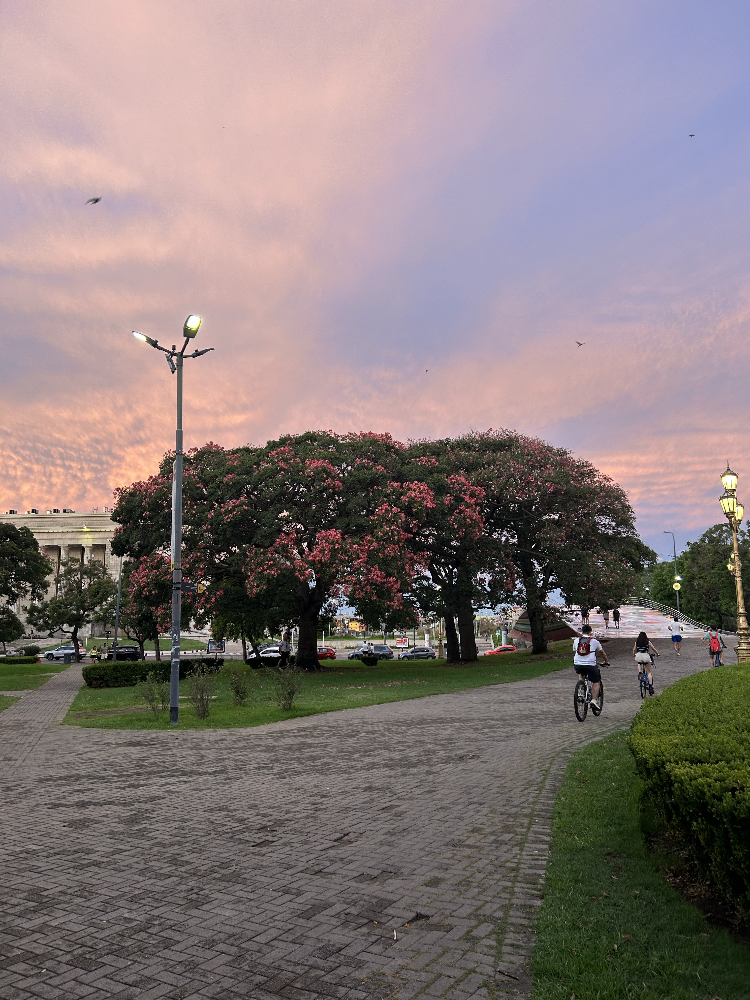
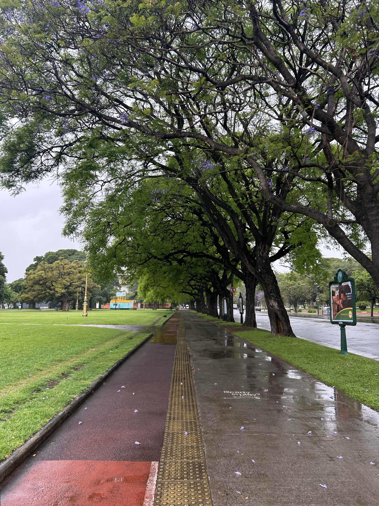

Avenida Libertador & Figueroa Alcorta
El circuito de Avenida del Libertador y Figueroa Alcorta es uno de los recorridos más populares entre los runners de Buenos Aires. Se extiende a lo largo de amplias veredas y bicisendas que conectan los barrios de Recoleta, Palermo y Belgrano.
El recorrido ofrece una superficie asfaltada y bien mantenida, ideal para correr a buen ritmo. A lo largo del camino se pueden apreciar edificios emblemáticos como el Museo Nacional de Bellas Artes, la Facultad de Derecho y el Museo de Arte Latinoamericano (MALBA).
Distancia aproximada: 6 km (ida y vuelta).
Superficie: Asfalto y veredas amplias.
Mejor horario: Temprano por la mañana o al atardecer, cuando baja el tránsito.


